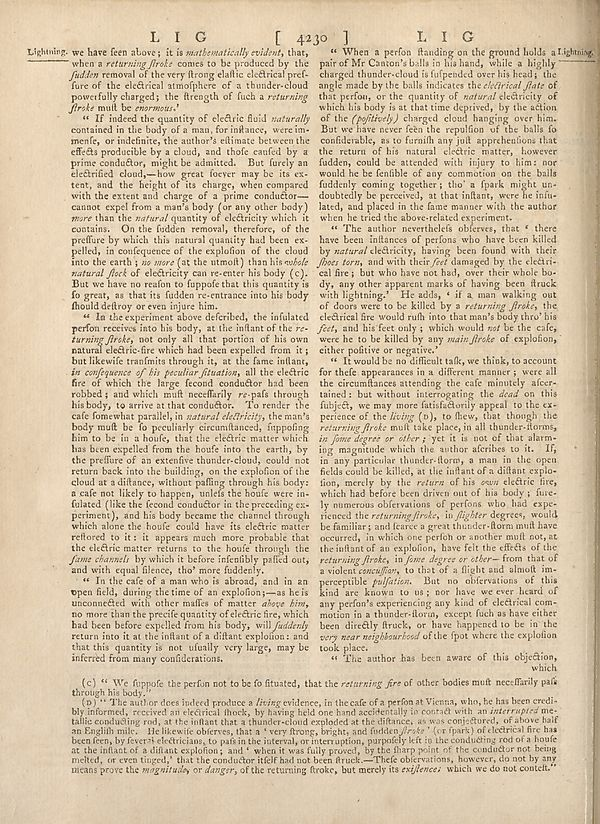

Source · scan and Parse blocks
Layers 2

Parse text by block reading order
- 0Page-headerL I G [ 4230 ] L I G
- 1TextLightning, we have few always; it is _mattematically couldn’t_, that, when a _returning firele_ comes to be produced by the _fuddro_ removal of the very frong elafic electrical prefi-fore of the electrical atmosphere of a thunder-cloud powerfully charged; the frength of such a retraining _fireks_ mult be enormous.
- 2Text" If indeed the quantity of electric field naturally contained in the body of a man, forrindance, were often mefe, or induding, the author's ultimate between the effects producible by a cloud, and those caned by a prime conductor might be admitted. But fairly electronic cloud,—how great forces may be its extent, and the height of its charge, when compared with the scenes and change of a prime conductor-- cannot cepel from a mared (way (only other key)) more than the natural quantity of electricity which it contains. On the fodder removal, therefore of the preffure by which this natural quantity had been expelled, in consequence of the equation of the cloud into the earth) so more (at the utmost) than his _robole natural lack_ of electricity can re-enter the body (c). But we have no reason to fopate that this quantity is fo great, as that its fudden re-entrance into his body found delivery on even injury third
- 3Text" At the experiment above deferbed, the infulated perfor receives into his body, at the infant of the _returning firele_ has only all that portion of his own natural electric-free which had been expelled from it; but likewise transmits through it, at the fame infant, _its consequences of the peculiar fluctuation_, all the electric fire of which the large cloud could had been robbeds and which mult needeffally re-pafa through his body, to arrive at that conductor. To render the cafe foreshable instability in natural electricity, the man's body mult be fo peculiarly circumdanced, impunding him to be in a hoofu, that the electric matter which has been expelled from the head into the earth, by the preffure of an extensive thundercloud, could not return back into the building, on the explorations of the clouds as different, without paling through his body: a safe not likely to happen, unfuls the boots were in- folated (like the second conductor in the preceding experiments), and his body became the claimed through which where the hole could have the electric matter reflored to it : it appears much more probable that the electric matter returns to the house through the _fame elements_ by whole it before recently pafled out, and with equal silence, too more fuddently.
- 4Text" If the cafe of a man who is abroad, and in an open field, during the time of an explosion —a he is unconnected with other matter of matter above him, no more than the preflic quantity of electric fire, which had been before expelled from his body, will definitely return into it at the infant of a dither explosion; and that this quantity is not uufaly very large, may be inferred from many considerations.
- 5Text(c) " We fuppie the perfor not to be fo fluuted, that the returning fire of other bodies mult necefarily pafa through his body.
- 6Text(b) " The author does indeed produce a living evidence, in the cafe of a person at Vienna, who, he has been credibly informed, received an electrical shock, by having held one hand accidentally in contact with an intercepted metallic coaching mind, at the infant that a thunder-cloud exploited at the influence, as was considered, or above half an English milk. He likewise observes, that a very strong, bright, and fulden firek (ce fpars) of electric fire has been been, by levels electrificants, to pais in the internal, or interruption, purposefully left in the concluding rod of a book at the infant do a distant explosions, and ‘when it was fully proved, by the sharp point of the conductor not being melted, or even tuged,' that the conductor itself had not been effect — "Other observations, however, do not by any means prove the magnitude or danger, of the returning broke, but merely its _esiflessen_ which we do not contiti."
- 7Text" When a perfon standing on the ground holds a Lightning pair of Mr Canton's balls in his hand, while a highly charged thunder-cloud is fufpended over his head; the angle made by the balla indicates the _electrical fate_ of this portion or the quantity of natural electricity of which his body as at the time deprived, by the action of the (_politively_) charged cloud hanging over him. But we have never feen the repollion of the balls to fulfillment, as to contain any the apprehensions that the return of his natural electric matter, however fudden, could be attached with his injury to him a nor would be be flexible of any common use the bulk fuddily coming together; the 'a fpark might un-doubtedly be perceived, at that infants, were he infuried, and placed in the four manner with the author when he tried the above-related experiment.
- 8Text" The author nevertheless observe, that , there have been influences of protons who have been killed by natural electricity, having been found with their _floos torna_, and with their feet damaged by the electrical line, but who have not bad, over their whole boo, any other apparent marks of having been ftuck with lightning." He adds, " if a man walking out of doors were to be killed by a returning firele, the electrical line would rub into that each body into his _feets_, and his feet only ; which would not be the cafe, here he to be killed by any _main fireke_ of exploding, either positive negative.
- 9Text" It would be no difficult talk, we think, to account for these appearances in different manner, were all the circumstances attending the cage minutely after-tained, but without interrogating the dead on this futjels, we may more falsifiedly appeal to the ex-perience of the living (a), to flew, that though the _returning fireks_ mult take place, in all thunder-forms, _in June degree or other_; yet it is now of that alarming magnitude within the author afterhes to it. If, a non particular thunder-form, a man in the open fields could be killed, at the infant of a dillank explotion, merely by the returners of his new electric fire, which had before been driven out of his body; lureely numerous obferations of persons who had experienced the _returning firele_, in fighting degrees, would be families, and favors a great teacher-theme must have occurred, in which one perform or another mult not, at theinflated an explosion, have felt the effects of the _returning firele_, in _foon degree or other_ from that of a violent sanctions, to that of a flight and almost impregnible pollution. But no observances we this kind are known to us say how we ever heard of any person's experiencing any kind of electrical com- motion in a thunder-loria, except fish as have either been directly frocks, or have happened to be in the _royar near neighborhood_ of the foot where the explodes took place.
- 10Text" The author has been aware of this objections, which
Provenance page_id, checksum, Parse model
- page_id
- britannica:309f765b1ecc83e0a7f7762e44b4a927a7555443:train:1910
- sha256
- f4723acc17718590625f337a0d5ddeef3e257ff963f793fe287f0f0cb81834ee
- Parse
- nvidia/nemotron-3.5-parse · finish stop